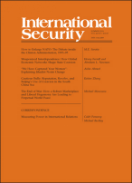
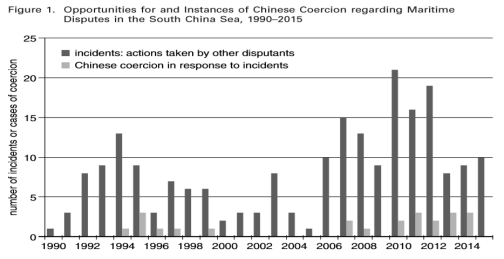
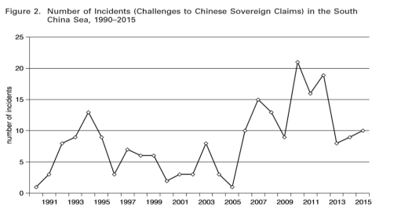
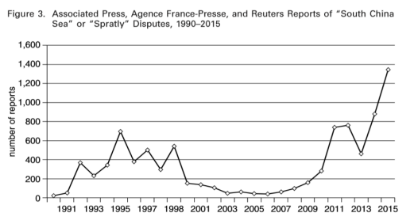
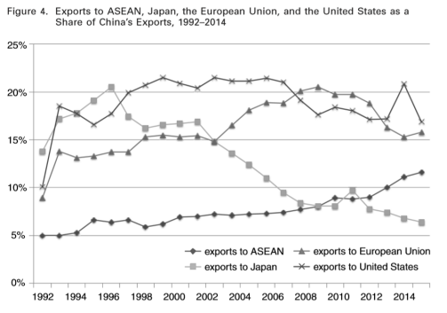
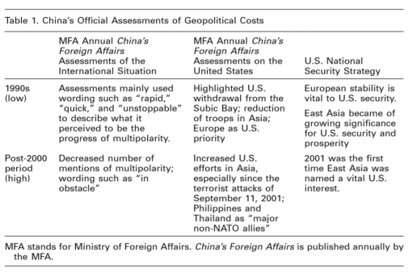
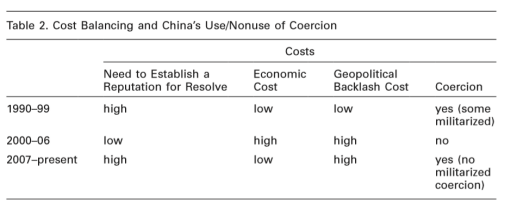

收录于合集

简 介
** 【作者】** Ketian Zhang，2018-2019年斯坦福大学Walter H. Shorenstein亚太研究中心博士后，2019年8月将在乔治梅森大学担任助理教授。
** **【 编译 】****李源
** **【 校对 】****金磊
** **【 审核 】****金琳，刘瑛琛
** **【 来源 】****Ketian Zhang (2019). Cautious Bully: Reputation,Resolve,and Beijing’s Use of Coercion in the South China Sea. International Security , 44(11), 117-159.
** 【期刊】** 《国际安全》(International Security)是国际和国家安全领域的同行评议学术期刊。它创刊于1976年，由哈佛大学贝尔弗科学与国际事务中心(Belfer Center for Science and International Affairs at Harvard University)编辑，由麻省理工学院出版，一年四期。2017年影响力因子为4.135，在“国际关系”类别的85种期刊中排名第2位。

声誉、决心与中国在南海争端中强制手段的运用
Cautious Bully: Reputation, Resolve, and Beijing’s Use of Coercion in the South China Sea
Ketian Zhang
内容提要
在南海争端中，中国会在什么时候、出于什么原因、以什么方式运用强制手段？为什么在某些争端事件中中国使用了军事性强制手段，而在某些事件中却使用了非军事性的强制手段？基于相关文件、报告与对中国官员和政策分析者的采访，作者通过强调预期成本与收益构建了一种“成本平衡理论”(cost- balancing theory)来对这些问题做出解释。文章的主要结论有三：第一，中国对待强制手段是小心谨慎的；第二，中国没有频繁地运用强制手段；第三，随着实力的增长，中国也没有频繁地运用军事性强制手段，而是更多地诉诸非军事性的强制手段。
文章导读
**1
**
强制手段的种类
作者以光谱的形式对强制手段的种类进行了说明。 不采取强制手段与军事性强制手段分别置于光谱的两端 ，前者是指虽然国家有能力采取实际性强制行动，但它仍诉诸沉默或抗议等方式；后者则是最强烈的强制手段，包括军事力量的展示、威胁与实际使用。同时，还存在以下三种强制形式：第一是 外交制裁 ，例如召回大使、降低外交关系、关闭使馆等。第二是 经济制裁 ，包括贸易制裁与金融制裁两种。第三是混合了军事性与非军事性强制手段的 “灰色地带”强制手段( gray-zone coercion) ,其模糊性使得发起国既可以实现其目标，又可以避免直接使用武力所可能引发的冲突升级与地缘压力。毫无疑问，强制手段的实际使用会比威胁使用更具可信度。
**2
**
成本平衡理论
在本部分，作者构建了一种“成本平衡理论”，并利用此来说明一国会什么时候、出于什么原因使用强制手段。 强制手段的核心收益在于展示决心、赢得声誉，其成本则来源于经济与地缘政治两个方面。 ****
当一国制定其国家安全政策时，它首先看重的是该议题的重要程度。一国是否决定使用强制手段也是同样的逻辑。对国家安全的威胁被视为一项高利害性的议题。然而，并不是所有的国家安全议题都是同等重要的。 一国只有认为该议题至关重要时才会诉诸强制手段。 ****但作者强调， 即使是同一议题，国家使用强制手段的时机与对象仍存在差异。 也就是说，议题的重要程度并不决定国家在什么时候决定使用强制手段。 因此，对强制手段成本与收益的考虑是至关重要的。
（一）强制手段的预期收益： 展示决心、赢得声誉
作者认为一国使用强制手段并不仅仅是为了实现某些特定的目标。不使用强制手段可能会导致该国可信度的下降，进而无法有效地威慑未来侵害国家利益的行为。施韦勒与杰维斯两位学者也认为一国会使用强制手段来表明它捍卫国家安全的决心与承诺。因此，作者强调 使用强制手段的目的与预期收益在于展示决心、赢得声誉，这超越了某一特定目的的范围。 ****在如何测量这一变量的问题上，作者选择了以下三个指标： 第一，官方展示决心的公开表态。 第二，威胁国家安全利益的事件的数量。 在一个相对集中的时期内，有多个国家挑战该国国家安全利益或一个国家多次挑战该国安全利益，该国可能会采用强制行动来避免被视为软弱。 第三，这些事件的可见度与曝光度。 ****作者利用媒体的报道程度来衡量可见度，即是否损害国家安全利益的事件被大量报道。可见度越高，国家越有可能使用强制手段来维护国家声誉。总之， 威胁国家安全的事件越多、其可见度越高，一国在是否选择强制手段来展示其决心、赢得声誉的问题上会面临更多的压力 。
（二）强制手段的经济成本 ****
由于经济的相互依赖，一国在使用强制手段时可能会面临经济上的成本与损失。 ****这些经济成本可能主要来自于市场、重要产品进口、投资等方面。作者认为 经济成本可能是影响国家决定是否使用强制手段的最关键因素。 ****作者选取了两个指标来测量这一变量： 第一，双边经济关系，包括贸易依赖程度与外国直接投资水平。 ****在不对称的双边经济关系中，如果目标国处于明显的优势地位，毫无疑问，强制实施国会面临更高的经济成本。 第二，考察政策分析者与官员如何认识这种不对称的经济关系。 ****
（三）强制手段的地缘政治成本 ****
除经济成本外，一国在使用强制手段时还可能会面临地缘政治上的成本。地缘政治成本可能来自于内外两个维度：增强自身军事力量与寻求外部盟友。具体而言， 作者将地缘政治成本界定为目标国制衡强制实施国的能力，包括即时的军事反击与长期的联盟制衡 。相比于经济成本， 地缘政治成本可能是影响国家决定选取什么种类（军事性 /非军事性）的强制手段的最关键因素，这是因为更大的地缘政治压力可能会产生针对该国的潜在军事同盟，进而恶化该国的安全形势。 ****因此，当地缘政治成本非常高时，国家更倾向于采取非军事性的强制手段。作者选取了两个指标来测量这一变量： 一是政府官员与政策分析者发布的威胁评估； 二是对其他国家 过往至今的政策、行为偏好与官方声明的评估。 ****
总之，在成本平衡理论中， 强制手段的运用是出于展示决心、赢得声誉的需要，同时受到其经济与地缘政治成本的限制。 ****在现实中，国家往往需要在经济和地缘政治成本与展示决心、赢得声誉之间做出平衡。同时，作者仍强调了以下三个要点：第一，尽管改变目标国的行为是强制手段的收益之一，但现有关于信号与声誉的研究文献表明：强制手段的预期收益集中于展示决心、赢得声誉上。第二，尽管使用强制手段有助于增加该国的国内合法性，但对合法性的关注并不是影响该国会在什么时候、出于什么原因选取强制手段作为政策工具的独立因素。第三，经济成本影响该国决定在什么时候使用强制手段，因为经济状况与领导人的任期紧密相关。而地缘政治成本影响该国对军事性 /非军事性强制手段的选择。
（四）指标数据的来源 ****
为有效地选取中国在南海争端问题上的相关数据， 依据其权威性程度，作者将数据来源划分为三类 ： 第一类是最具权威性的官方政府文件等 。例如，中国外交部每年发布的《中国外交》、国防部每两年发布一次的《国防白皮书》、国务院的《政府工作报告》、国家海洋局颁布的《中国海洋发展报告》，以及中国海关与商务部的数据。 第二类包括政府智库撰写的半官方的文件与报告、人民日报上的相关文章（例如 “钟声”国际评论专栏）。 ****作者利用了中国社会科学院、中国现代国际关系研究院、中国南海研究院、中国国际问题研究院以及中国军事科学院出版的相关报告。第三类则包括一些不具有权威性的学术著作与文章。除相关报告与文件外，作者 还对相关人员进行了采访 ，主要包括以下三类： 第一，中外前政府官员； 第二，有机会接触到政府内部信息的政策分析者；第三，大量的中外学者。 采访地点包括北京、上海、广州、海口、南京、武汉、厦门、华盛顿等地。通过分散地理位置与受访者的种类，作者试图减少机构、地理与职业上的偏差。同时，为进一步减少偏差，作者还选取了相关辅助材料与数据进行检验。
**3
**
中国在南海争端中强制手段的运用
作者将南海争端问题划分为两类：一是岛屿争端；二是争议海域的能源开采问题。通过统计1990年至2015年争端事件的数量与中国使用强制手段的次数，作者发现： 中国在 20世纪90年代中期运用强制手段来应对南海争端事件，从1994年至1996年采取更为积极、有时是军事性的强制手段。然而，在21世纪初，中国开始避免在南海争端中使用强制手段。从2007年开始，中国又开始增加对强制手段的使用，特别是“灰色地带”强制手段。但与20世纪90年代不同，此时中国所使用的是非军事性的强制手段，包括经济与外交制裁、“灰色地带”强制手段。

**从强制手段的预期收益来看，中国在 20世纪90年代展示决心、赢得声誉的需求是非常高的，在2000年至2006年有所下降，2007年之后又开始回升。**作为衡量这一需要的 指标之一，挑战中国国家主权的事件 在20世纪90年代中期大量增加，从2000年至2006年有了戏剧性的下降，2007年后又开始大量增加。 **就事件的可见度与曝光度这一指标来说，作者搜集了自 1990年至2015年法新社、美联社与路透社三大通讯社关于南海或南沙群岛争端的报道。**这些媒体的报道毫无疑问会增加南海争端议题的曝光度与中国展示决心、赢得声誉的压力。结果显示：国际媒体报道在20世纪90年代是非常多的，从2000年至2006年数量较少，2009年开始再次回升。 通过搜集官方机构的表态与正式文件、半官方机构的年度报告以及与相关政府官员、政策分析者的采访，作者进一步证实了以上的这些变化趋势。


**从中国的经济成本来看，中国使用强制手段的经济成本在 20世纪90年代是比较低的，从2000年到2006年略有上升，2007年后又再次回落。就双边经济关系这一指标来说，**相比于对日本、欧盟与美国，中国对东盟的出口量一直是比较低的。而且自21世纪中期后，中国—东盟贸易日渐在东盟的整体贸易关系中占据重要地位。然而， **作者认为这一客观的数据并不能完全地揭示 “细节”。**在2000年至2006年的短暂时间内，中国对东盟行使强制手段的经济成本实际上是比较高的。21世纪初加入WTO之后，中国的经济战略之一就是加强地区经济合作。与东盟的经济合作便是一个理想的起点。 为减轻对中国入世的恐惧，中国需要与东盟一起建设自由贸易区，但东盟却有除中国之外的其他选择。 因此， **为了提高与东盟的经济关系，中国在 21世纪初实际上克制了对强制手段的使用。**相关政府官员的讲话、政策分析者与政府智库的报告也证明了这一点。

从中国的地缘政治成本来看， 20世纪90年代中国使用强制手段的地缘政治成本比较低，但在21世纪初之后开始上升。首先，作者搜集了中美两国的官方文件对“多极”( multipolarity )一词的使用与描述， 主要是中国外交部的《中国外交》与美国的《国家安全战略报告》。作者认为在中国的政治语境下，多极一词意味着中国在国际体系中享有更大的灵活性与更少的来自美国的地缘压力。通过筛选，作者发现在20世纪90年代中国外交部对多极进程是更为乐观的。但21世纪初之后，对多极一词的提及出现下降。 **其次， 20世纪90年代中国外交部的评估认为美国与俄罗斯在东南亚地区的影响力都在下降，而进入21世纪后中国官方则表现出了对美国重返东南亚的担忧。**政府智库的报告与对政策分析者的采访也证实了地缘政治成本在21世纪初的这一转变。

下表则总结了成本平衡理论如何解释中国在南海争端中强制手段的运用。

**4
**
成本平衡理论的具体应用：2012年的中菲黄岩岛争端
在2012年的中菲黄岩岛争端中，中国并没有采取军事性的强制手段，而是诉诸经济制裁、外交制裁与“灰色地带”强制手段等非军事性强制手段。 按照成本平衡理论，中国之所以在此次争端中使用强制手段，是由于中国展示决心、赢得声誉的需求是非常高的，同时所面临的经济成本比较低。但考虑到高昂的地缘政治成本，中国避免了使用军事性强制手段，从而转向非军事性的强制手段。 在本部分中，依据官方的表态、报告与文件，人民日报的刊文，半官方机构的报告以及对中国官员、政策分析者的采访等，作者从展示决心与赢得声誉的需求、面临的经济成本与地缘政治成本三个方面进行了详细的论证与说明。
**5
**
对中国运用强制手段的其它解释
在本部分，作者介绍了几种其他的假设来解释一国会在什么时候、出于什么原因使用强制手段，但 作者也分析了为何这些假设无法解释中国在南海地区强制权力的运用。首先，强大的国内游说集团可能会向政府施压，要求政府采取类似的行动。 但官方文件表明中国在南海争端中强制手段的使用是非常规范化与集权化的。 第二个解释来源于国内政治方面 。 面对 国内政治 压力 （例如国内社会问题与民族主义情绪）， 领导人可能会使用强制手段来增加国内合法性。 但作者强调对合法性的追求并不是驱动中国使用强制手段的原因，对多位中国政策分析者的采访也证实了这一点。对于第二个解释假设，作者具体分析了为何一些国内政治压力无法解释中国对强制手段的运用。 第三个解释在于权力 变量 ，包括相对权力、综合实力与权力 平 衡。 相对权力的观点认为一国的权力优势下降时，它更倾向在领土争端中使用武力。对于综合实力的观点，进攻性现实主义认为随着实力的增长，中国将更倾向于使用武力。但这两种观点明显与中国使用强制手段的实际状况不符。权力平衡的观点认为中国会使用强制手段来制衡更强大的国家（例如美国），但并没有明显的证据表明中国正在通过使用强制手段在南海地区制衡美国。即使存在这样的证据，它也无法解释为什么中国在一些事件中使用了强制手段，而一些事件中却没有。因此，无论是相对权力、综合实力还是权力平衡的观点，都无法有效地解释中国在南海地区强制手段的运用。
**6
**
结 论
本文构建了一种成本平衡理论来解释中国会在什么时候、出于什么原因在南海争端中使用什么种类的强制手段。 强制手段的运用是出于展示决心、赢得声誉的需要，同时受到其经济与地缘政治成本的限制。 当展示决心、赢得声誉的需要超过其经济成本时，中国会使用强制手段。当地缘政治的成本是异常高昂时，中国更倾向于使用非军事性的强制手段。相比经济与地缘政治成本，中国看重其展示决心、赢得声誉的需要。 非对称的经济相互依赖关系为中国提供了强制性杠杆，但同时军事性强制手段可能导致冲突与不稳定，这可能会对中国经济的增长产生不利影响。 此外，作者认为中国会利用美国的声明与以往行动来评估美国在亚太地区的安全承诺。 美国是否以及如何卷入南海争端会严重影响中国使用强制手段的决定。 最后，作者强调 成本平衡理论也可以对其他的议题与国家做出解释 。例如，达赖问题、韩国萨德问题等。
_ ** _ 本文由国政学人平台编译推荐**
往期阅读
【重磅速递】约瑟夫·奈：美国霸权的兴衰：从威尔逊到特朗普 | 国政学人
【重磅推荐】巴里·布赞：英国学派视角下的中国崛起 | 国政学人
【重磅速递】米尔斯海默：注定失败：自由主义国际秩序的兴衰 | 国政学人
【IPE重磅】罗伯特·基欧汉：国际政治经济学的新与旧 ｜国政学人
【百年国关】历史在国际社会中的应用：从巴黎和会到现在 | 国政学人
【国际组织】IO杂志：联合国维和行动的武力运用问题研究 | 国政学人
【国际秩序】为什么自由主义国际秩序理念将美国外交政策引入歧途？| 国政学人
【关系理论】“关系”：世界政治关系理论的中国话语 | 国政学人
【英国学派】张勇进：中国与全球国际社会中的自由主义等级制：实力与对规范变迁的协商 | 国政学人
【地区秩序】论经济实力的可转化性：中国经济崛起与东亚安全秩序 | 国政学人
【中俄关系】不得已的伙伴：系统-单元动态与中俄关系 | 国政学人
【IPE研究】美国对外贸易政策的“1934年体制”是如何形成的？| 国政学人
【现实主义】斯蒂芬·沃尔特：傲慢的终结与美国克制的新时代 | 国政学人
【理论批判】系统、层次与结构理论：沃尔兹的理论并非系统理论 | 国政学人
【外交政策】单极体系下的不和平状态与美国外交政策 | 国政学人
【欧洲研究】资本主义多样性与合规：加入欧盟后中东欧的经济改革 | 国政学人
【理论研究】吴建树：权力、道德、均势、联盟与摩根索——汉斯·摩根索的经典现实主义思想再解读
【友谊国关】将友谊重新引入国际关系：从中国到西方的关系本体论
【定量研究】政党实力和经济增长（Party Strength and Economic Growth）| 国政学人
【台湾学者】向骏：美国从“霸权稳定”到“霸凌不稳定” | 国政学人
【理论研究】巴里·布赞等：重思日本：主流国际关系理论的偏见 | 国政学人
【南亚研究】南亚对冲：中印竞争中经济和安全利益的平衡 | 国政学人
【外交政策】美国霸权的自我毁灭：华盛顿浪费了单极时代 | 国政学人
【定量研究】谁在欧洲议会中领导委员会？ ——基于2014年欧洲议会选举的研究 | 国政学人
【定量研究】暴露于难民危机之中会让当地人更有敌意吗？| 国政学人
【恐怖主义】恐怖主义组织扩展数据（EDTG）的介绍——从1970年到2016年 | 国政学人
【定量研究】赞助、信任和国家能力：庇护主义的历史轨迹 | 国政学人
【伊朗研究】比较伊朗伊斯兰革命前后威权政体的本质和领导能力 | 国政学人
【东亚研究】东亚的重叠式区域主义：决定因素和潜在影响 | 国政学人
【战争研究】不确定的战争：克劳塞维茨在全球时代仍适用吗？｜国政学人
【历史类比】克服西方历史想象的贫困：理解中国南海冲突的其他历史类比案例 | 国政学人
【区域重磅】阿米塔·阿查亚：重塑东南亚研究：自我怀疑、渴望和对比较的承诺 | 国政学人
【安全研究】打击军事力量的新时代：科技变化与核威慑的未来 ｜国政学人
【理论研究】砝码国家何以自抬身价？——两极格局下同盟政治中的“科林斯难题”研究
【中东研究】国际误识：以色列公共外交中的幽默政治和国家认同 | 国政学人
【IPE研究】公平贸易运动对内嵌自由主义的挑战 | 国政学人
【社群冲突】非洲农村社群冲突分析：剩男与一夫多妻的邻族 | 国政学人
【安全研究】核机会主义：一种在国际政治中国家如何使用核武器的理论 ｜国政学人
【方法研究】我们应该在多大程度上信任乘积交互模型？改进实证研究的简单工具 | 国政学人